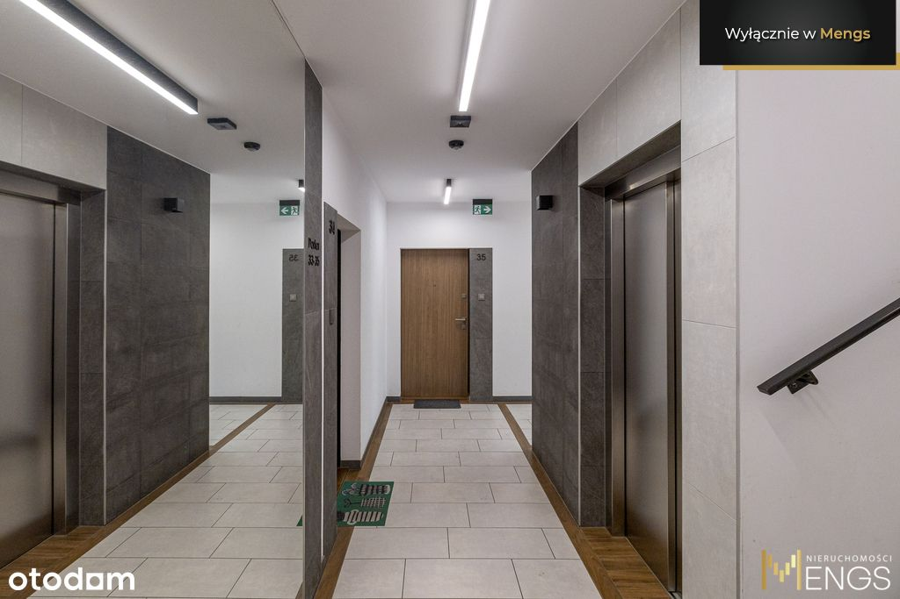
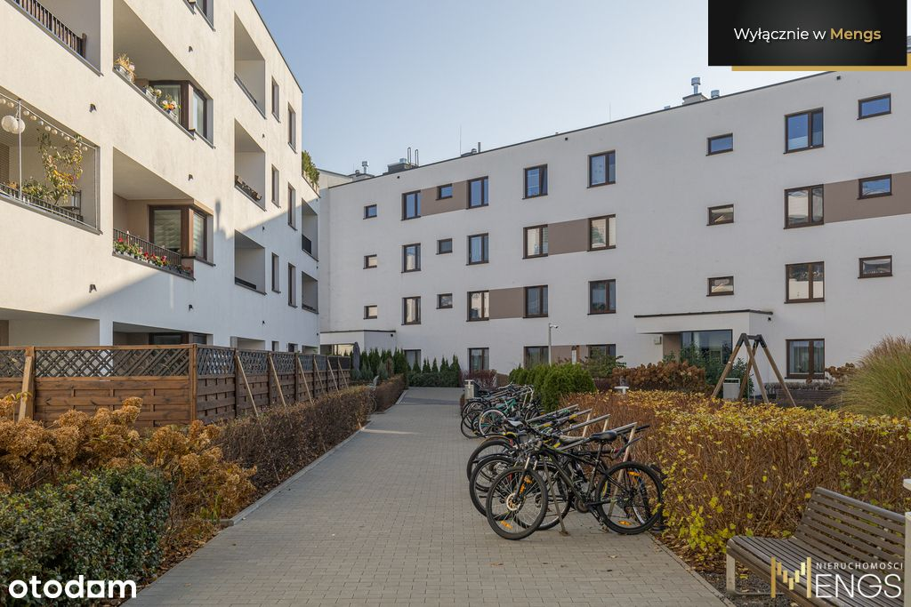
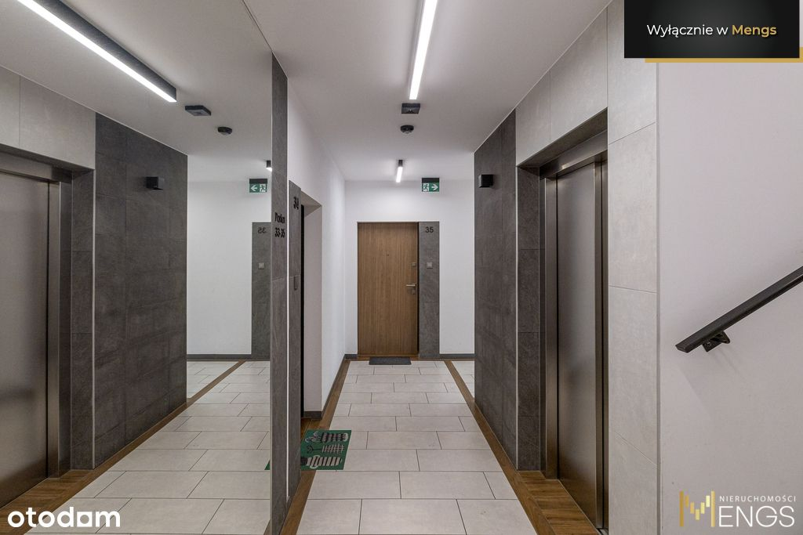
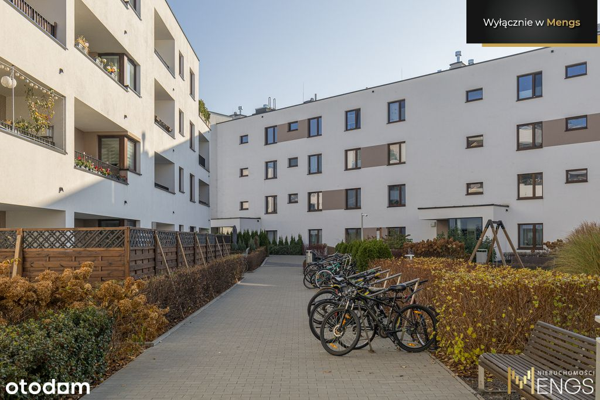

Zapraszam do zakupu rozkładowego , trzypokojowego mieszkania o powierzchni 77.73 m2, zlokalizowanego przy ul. Janowieckiej na "Osiedlu Wilno"
***MIESZKANIE*** jest doskonałą propozycją dla rodziny z dziećmi lub jako inwestycja. W pokojach na podłodze położone są panele. Każde z pomieszczeń, jest umeblowane. Mieszkanie zostało urządzone w 2020 roku (nie wymaga wkładu finansowego. Do dyspozycji pozostaje pełne wyposażenie AGD. W budynku jest zamontowana winda, którą można zjechać do hali garażowej. Do mieszkania przynależy miejsce parkingowe w garażu podziemnym (płatne dodatkowo 40 000).
Usytuowane jest trójstronnie południe-zach - północ . Pierwotnie mieszkanie było 4-pokojowe ale zostało przekształcone w 3-pokojowe i składa się z:
· przestronnego salonu z aneksem 35,67 m2,
. sypialni 10,51 m2
. pokoju dziecięcego 14,3 m2
. hol 9,25 m2
· garderoby 2 m2
· łazienki 6 m2
· Loggia – 5.41 m2
W galerii zdjęć załączyłem 2 plany pierwotny 4 pokojowy i obecny 3 pokojowy. Jest możliwość przekształcenia mieszkania ponownie na- 4 pokojowe.
NIERUCHOMOŚĆ: Mieszkanie znajduje się na 1 piętrze (3 piętrowy budynek z windą). Budynek został wybudowany w 2020 roku przez jednego z renomowanych deweloperów - Dom Development. Osiedle Wilno to nowoczesna inwestycja w prężnie rozwijającej się części Targówka. Osiedle cechuje się niska zabudową oraz posiada dużo pięknych i zadbanych terenów zielonych. Mieszkanie świetnie sprawdzi się zarówno dla rodziny jak i pod inwestycję.
Forma własności : pełna własność z założoną księgą wieczystą jest możliwość kredytowania, grunty są uregulowane.
Wysokość czynszu : 1 127 PLN
Infrastruktura : Lokal znajduje jest na nowocześnie zaprojektowanym Osiedlu Wilno. Okolica jest bardzo cicha i spokojna. Na osiedlu znajduje się wiele punktów handlowo-usługowych . Blisko osiedla znajdują się również supermarkety oraz kompleksy usługowo - handlowe. W pobliży mamy duży wybór przedszkoli, szkół podstawowych i liceów, brak strefy płatnego parkowania.
Komunikacja i dojazdy: Lokalizacja jest świetna również ze względu na komunikację. 400 metrów od mieszkanie znajduje się stacja PKP Zacisze Wilno dla mieszkańców a stamtąd do Dworca Wileńskiego dojedziemy w 5 minut tam możemy przesiąść się do stacji Metra Dworzec Wileński. Na osiedlu znajduje się również pętla autobusowa linii: 156, 170 którymi możemy dojechać w 10 min do Metra Targówek Mieszkaniowy lub do Dworca Wschodniego. To idealna propozycja dla osób ceniących sobie komfort, funkcjonalność oraz szybki dostęp do miejskich atrakcji. Lokalizacja zapewnia doskonałą komunikację z resztą miasta, co jest nieocenionym atutem dla aktywnie żyjących osób.
Stacje metra: Metro Dworzec Wileński, Metro Zacisze, Metro Trocka, Metro Targówek Mieszkaniowy.
Okolica : Mieszkanie jest bardzo korzystnie usytuowane – pozwala nam czerpać z wszystkiego co najlepsze z infrastruktury miejskiej, a równocześnie daje nam możliwość cieszyć się ciszą i zielenią i bliskością terenów rekreacyjnych . Po ciężkim dniu, można się wybrać do sąsiadującego lasu lub nad Zalew Bardowskiego 1 km (gdzie możemy poczuć się jakbyśmy byli poza miastem) - świetna alternatywa dla ludzi lubiących aktywny wypoczynek.
Zapraszam na prezentację.
Firma Mengs oferuje nie tylko Doradców ds. Nieruchomości, którzy mogą pomóc w znalezieniu i zakupie oraz w sprzedaży nieruchomości. Zachęcamy również do skorzystania z wiedzy naszych doświadczonych Ekspertów Kredytowych, solidnych ekip remontowych oraz specjalistów od inwestycji.
Oferujemy kompleksowe usługi: od znalezienia odpowiedniej nieruchomości, poprzez sfinansowanie jej zakupu, aż po projekt i remont wnętrza. Jeśli później zechcesz wynająć lub sprzedać z zyskiem tę nieruchomość – w tym też możesz liczyć na naszą pomoc.
Oferta wysłana z programu dla biur nieruchomości ASARI CRM ()
 
